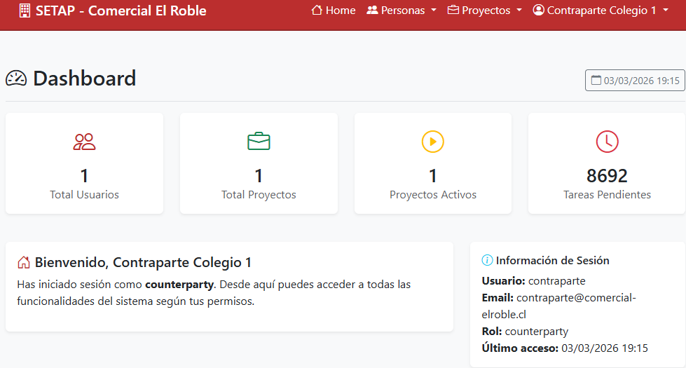

Control en tiempo real, trazabilidad y respaldo para servicios recurrentes externalizados.
Simplifique procesos. Reduzca supervisión. Mejore resultados.

Planificación estructurada
Control por rol y permisos
Evidencia digital de ejecución
Histórico completo por proyecto
Hasta 80% menos desplazamientos y llamadas.
Evidencia documentada al iniciar y finalizar cada tarea.
Progreso de proyectos en tiempo real.
Proyecto piloto en mantención de aseo profesional para un establecimiento educacional, con más de 8.700 tareas anuales y más de 4.400 horas planificadas, utilizando roles diferenciados y calendario completo adaptado al ciclo operativo.